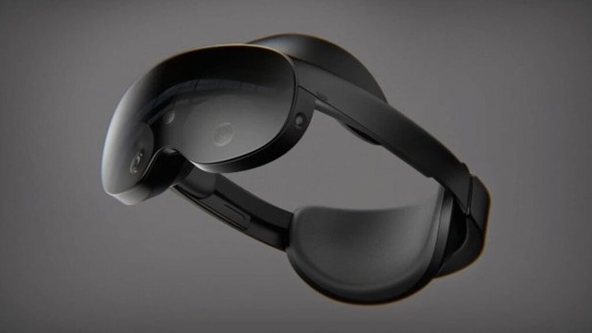

Steve Moser, a developer of the iOS VR Headset App, has confirmed that Wison Meta is working to launch a new high-end VR Headset (also known as Project Cambria). He has further stated that it is named as "Meta Quest Pro".
The Meta Quest Pro VR Headset could be unveiled on October 11th, 2022 at 10 AM PT during the Meta Connect conference and the news comes to us from none other than Meta CEO Mark Zuckerberg, who was pictured wearing a VR Headset on October 11th. Meta Connect"See you at" was posted on Facebook with the caption.

Pricing for the Meta Quest Pro has yet to be confirmed, but Zuckerberg says it will cost more than the Oculus Quest 2.
The most exciting feature of Meta Quest Pro is the Eye and Face Tracking Technology and the Headset will be able to detect where you are looking. So you will be able to use your gaze instead of the mouse pointer.
And Zuckerberg has confirmed that the headset can determine your facial expressions with the Face Tracking Feature. So your Avatar can mimic the wrinkles and smile on your face.
As Meta usually releases new headsets and related apps in October, we hope to see more details about this new VR headset soon.